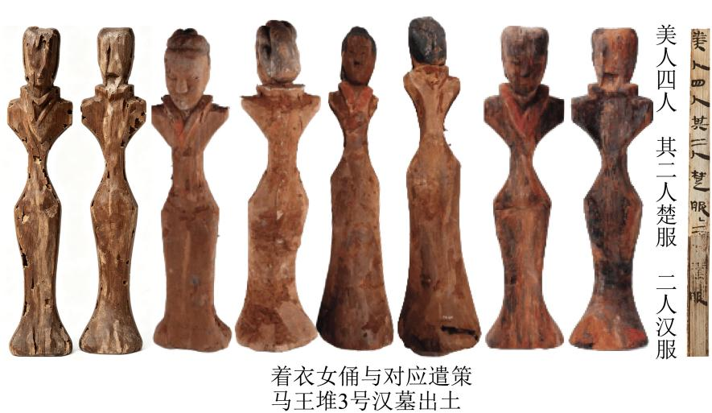

练习 · 论述类文本阅读
汉服与马王堆直裾袍
以服饰实物、遣策与图像为证，区分考古事实与服饰身份推断。
导读
文体与题材：学术性随笔（服饰史研究摘编）；汉代服饰考古与“汉服”源流。
作者简介：左丘萌。
文本出处：
内容脉络：材料由汉初尚俭的风尚引出衣式变化，再具体说明直裾袍及相关下裳的形制。后文结合遣策、俑像和帛画辨认服饰身份，并旁及短后衣的流变，使形态描述与历史推断结合起来。
内容主旨：文章结合出土服饰、遣策及图像，讨论汉代直裾袍的形制与流变，说明服饰身份须置于历史语境考察。
阅读重点：区分实物信息、文献记载与研究者推断，注意命名和断代的证据强弱。
原文
原文按结构分节；随文内容可定位至对应段落。
背景：汉初尚俭风尚与新衣式出现
伴随着楚歌楚舞流布汉初各地的楚式服装，以刺绣为衣，以织锦为缘，用料用工都极奢侈。西汉前期，因国家初定，社会还未从战乱中恢复，几代帝王都提倡无为、与民无争的治国理念。司马迁《史记》中记载道：“孝惠皇帝、高后之时，黎民得离战国之苦，君臣俱欲休息乎无为。”当时的服饰穿用自然也崇尚俭朴，甚至对身份较低者加以限制，不许他们穿用奢侈的衣料。《汉书·高帝纪》载汉初禁令：“贾人毋得衣锦、绣、绮、縠、絺、纻、罽。”到了汉文帝时，更是一力倡导节俭，《汉书·文帝纪》称其“身衣弋绨，所幸慎夫人衣不曳地，帷帐无文绣，以示敦朴，为天下先。治霸陵，皆瓦器，不得以金银铜锡为饰”。文帝自己衣着俭朴，他所宠爱的慎夫人穿衣也不会曳地。
鉴于此种风尚的流行，一种用料更为节省的新样衣式也在这时出现了。
注释 · 批注 · 札记 1
阅读提示
伴随着楚歌楚舞流布汉初各地的楚式服装，以刺绣为衣，以织锦此处在全篇中的功能是：背景：汉初尚俭风尚与新衣式出现。相关概念须结合上下文限定理解。
形制：直裾袍的形制与“鱼尾”下裳
马王堆1号汉墓出土服装实物中另一类被考古工作者称作“直裾袍”的服装，正是在这样的时代背景下应运而生。该款式又改回到古制“深衣”的方角式续衽，用料要比楚式尖角续衽的款式俭省得多。甚至衣物上繁复华丽的纹饰，也不再使用费工且不符合朝廷所倡节俭精神的刺绣来制作，而是采用相对更简易的印绘形式实现。唯独保留的一些楚风是其宽领宽缘。
尤为有特色的是这种服装下裳部分的裁制，大概当时人一方面要维持中央朝廷倡导“裙不曳地”的大原则，一方面又倾心于曾经在战国时期风靡一时的曳地长衣的下摆在地面曳开的美感。这些西汉制衣裁缝们仍旧运用如同往昔楚人改制深衣般的思路，直接运用立体剪裁成型手法，将下裳的宽缘制作成上窄下宽的梯形。实际穿着时，这类服装下摆虽未在地面拖曳，却也呈现出如鱼尾一般向左右两边扩展张开的状态。
注释 · 批注 · 札记 1
阅读提示
马王堆1号汉墓出土服装实物中另一类被考古工作者称作“直裾“方角式续衽”“印绘形式”“宽领宽缘”分别对应结构、纹饰工艺与楚风的保留。本项保留了这些特征所属的同一对象，没有把曲裾旧制移给直裾。
流变：据遣策、俑像、帛画推断“汉服”身份，并及短后衣之流变
马王堆3号汉墓出土遣策上记载有“美人四人，其二人楚服，二人汉服”。据研究者推测，这项记载对应的应当是墓中出土的四件着衣女俑。由于俑衣均已残损不存，俑身形态也基本一致，难以直接判断出原本的服装何为“楚服”，何为“汉服”。但联系到马王堆1号汉墓出土的两种款式有明显区分的袍服，“楚服”当是早已出现在战国晚期楚地的尖角式续衽的衣式，亦即所谓“曲裾袍”；而“汉服”应为汉朝时新出现，更符合汉朝帝王俭约精神、制作时耗费衣料更少的直角式续衽衣式，亦即所谓“直裾袍”。
类似的“汉服”服饰形象又见于陕西咸阳汉景帝阳陵陪葬墓与山东淄博临淄山王村汉代齐国王陵陪葬坑等多处其他地域墓葬出土的俑像身上，文物例证远远多于尖角式续衽的“楚服”，可见应是当时汉朝各地区流行且符合朝廷规制的衣式。
其中临淄山王村陪葬坑的时代应晚于马王堆汉墓。出土的众多俑像中，有多件彩绘女俑保存完整，外衣的领、袖、续衽缘边以及宽大的鱼尾状的颜色与衣身相异，可以明确看出其服饰结构与马王堆1号汉墓出土的“直裾袍”有明显的继承关系，只是缘边的宽度有所收窄，而下摆的“鱼尾”部分愈加夸张地向左右两边延展开来。
汉景帝阳陵陪葬墓中出土的塑衣彩绘陶俑像，还在“鱼尾”衣外再加穿了一层罩衣。这种罩衣除领缘较低外，整体轮廓与里层衣物几乎一致。然而罩衣的下摆却有特异的裁剪方式：一改古礼中深衣“下齐如权、衡以应平”（下摆平齐）的状态，而是刻意将衣身后部与“鱼尾”接触的部分挖空，形成前身长、后身短的倒“凹”形下摆。这种衣式或可称作“短后衣”。之所以出现这样的特征，推想大概原因有二：一是节省用料，符合朝廷所倡导的俭约之风；二是内层衣物的“鱼尾”下摆已愈加向左右宽大撑开，罩衣自身的“衣下裙”需要为里衣的鱼尾状下摆留出空间，不得不裁去后身的下摆部分。
再来回顾马王堆汉墓出土的文物，3号墓帛画《车马仪仗图》中也有多人是身穿短后衣。虽线条已较为漫漶，但衣着上色大致分明，对照阳陵陪葬墓出土陶俑看，应是同一式样的外衣。可见这种短后衣大概是当时较为通行的款式。
（摘编自左丘萌《何以汉服：重新发现马王堆汉墓服饰》）
注释 · 批注 · 札记 1
阅读提示
马王堆3号汉墓出土遣策上记载有“美人四人，其二人楚服，二“俑衣均已残损不存”限制了判断条件，“难以直接判断”明确标示证据不足。遣策能提示类别存在，却不能使已损坏的每件衣服与类别一一确定对应。

第1题 · 内容理解
下列对原文相关内容的理解和分析，不正确的一项是（）
A．汉初帝王提倡节俭，限制商贾穿用锦、绣、绮、縠等奢侈品，这种政策也推动了当时服饰形制的变化。
B．“直裾袍”采用古制“深衣”方角式续衽的方式以及简易的印绘纹饰，只保留了宽领宽缘的楚风特征。
C．研究者可依据“美人四人，其二人楚服，二人汉服”的记载明确区分马王堆3号汉墓四件着衣女俑的服饰款式。
D．临淄山王村陪葬坑出土的女俑服饰，体现出对马王堆“直裾袍”的继承与发展，其“鱼尾”下摆更为夸张。
参考答案1展开 / 收起
参考作答
C
审题与考查点
本题选“不正确”项。C项属曲解文意中的典型类型——混淆或然与必然，将原文的推测性、否定性表述改述为确定性结论。
文本分析
以下按判断、证据与推理逐项分析。选项标题和证据引文均可定位并高亮相应语句。
A项查看证据 ↗
禁奢与节俭政策提供社会背景，随后“鉴于此种风尚”把新样衣式与这种背景联系起来。因此文中确实建立了政策、风尚与服饰变化之间的解释关系。
B项查看证据 ↗
“方角式续衽”“印绘形式”“宽领宽缘”分别对应结构、纹饰工艺与楚风的保留。本项保留了这些特征所属的同一对象，没有把曲裾旧制移给直裾。
C项查看证据 ↗
“俑衣均已残损不存”限制了判断条件，“难以直接判断”明确标示证据不足。遣策能提示类别存在，却不能使已损坏的每件衣服与类别一一确定对应。
D项查看证据 ↗
“有明显的继承关系”与“鱼尾”部分向两侧延伸分别支持继承和变化两个判断。概括应同时保留联系与差异，不能只看到相似便说形制完全相同。
知识点
将判断对象、适用条件与结论范围分别说明，再以具体词句验证解释；概念名称不能代替推导。
解题方法
拆分选项中的对象、事实关系及限定，回文定位证据，再检验结论是否可由证据推出。与原文不同措辞不自动构成错误。
易误辨析
术语只能概括已经证明的问题，不能代替逐项推理。区分相对不够贴切、缺乏证据与直接违背文本三种判断。
答案组织与检核
明确选择后，按选项分别写出关键证据、适用概念与推论。比较题说明相对优势；有条件的结论保留限定，不为排除选项而添加原文没有的绝对规则。
第2题 · 推断评价
根据原文内容，下列说法正确的一项是（）
A．马王堆1号汉墓的服装实物与3号汉墓的遣策构成互证线索，支持作者关于“汉服”可能指汉朝新出现的直裾袍的推断。
B．西汉前期的服饰改革是由统治阶层的行政命令推动的，与普通民众的需求与审美喜好无关。
C．西汉的制衣裁缝运用立体剪裁成型的方法，将下裳的宽缘制作成梯形，体现出更为高超的制衣技巧。
D．“汉服”通过长衣曳地的设计和倒“凹”型的独特剪裁，形成新颖别致的外观，体现当时人们对美的追慕。
参考答案2展开 / 收起
参考作答
A
审题与考查点
A项为正确项；误项分属两种类型——B项曲解文意，C项无中生有，D项张冠李戴。
文本分析
以下按判断、证据与推理逐项分析。选项标题和证据引文均可定位并高亮相应语句。
A项查看证据 ↗
实物显示服装形态，遣策提供服饰名称，两者构成互证线索。但原文使用“应为”等限定，结论仍是有据推测；本项保留了这种强度。
B项查看证据 ↗
文中写时人对曳地美感的“倾心”，说明审美需求进入形制解释。统治阶层的政策作用可以成立，但不能据此排除其他社会因素。
C项查看证据 ↗
“立体剪裁”是技术描述，并不自动等于整体技术比其他时代“更为高超”。判断比较优劣需要明确比较对象与标准，本项缺少这两项依据。
D项查看证据 ↗
“裙不曳地”与“下摆虽未在地面拖曳”直接限定直裾袍的形制。本项把曳地旧风移给所述汉服，混淆了相邻介绍的对象。
知识点
将判断对象、适用条件与结论范围分别说明，再以具体词句验证解释；概念名称不能代替推导。
解题方法
拆分选项中的对象、事实关系及限定，回文定位证据，再检验结论是否可由证据推出。与原文不同措辞不自动构成错误。
易误辨析
术语只能概括已经证明的问题，不能代替逐项推理。区分相对不够贴切、缺乏证据与直接违背文本三种判断。
答案组织与检核
明确选择后，按选项分别写出关键证据、适用概念与推论。比较题说明相对优势；有条件的结论保留限定，不为排除选项而添加原文没有的绝对规则。
第3题 · 证据归纳
文本篇末说“这种短后衣大概是当时较为通行的款式”，作者是根据哪些证据得出这一结论的？
参考答案3展开 / 收起
参考作答
实物证据：汉景帝阳陵陪葬墓出土的塑衣彩绘陶俑像，在“鱼尾”衣外加穿倒“凹”形下摆的短后衣。
图像证据：马王堆3号墓帛画《车马仪仗图》中有多人身穿短后衣，对照阳陵陶俑应为同一式样。两地、两类文物互证，故推断短后衣“大概是当时较为通行的款式”。
审题与考查点
论据梳理类简答题，考查结论与证据之间的支撑关系，答案只列证据、不复述结论。
文本分析
证据与推导 1查看证据 ↗
第一步定位结论句——篇末“可见这种短后衣大概是当时较为通行的款式”，“可见”即证据区间的回搜信号。第二步回搜上文两段：第八段阳陵陪葬墓塑衣彩绘陶俑外罩“短后衣”，为雕塑实物之证；第九段马王堆3号墓帛画《车马仪仗图》“也有多人是身穿短后衣”，为图像材料之证。第三步看互证结构：一在关中，一在长沙；一为陶俑实物，一为帛画图像，地域与载体双重互证，“较为通行”的推断由此成立。
知识点
归纳由若干观察支持更一般的判断，其可靠性与样本范围、代表性、独立性以及反例情况有关。多处同类证据可增强支持，但不能仅凭数量证明结论必然成立。
解题方法
证据表述须点明“何地、何墓、何物”，并揭示不同证据间的互证关系；漏答其中一处，论证链即不完整。
易误辨析
其一，【方法】只答一处证据，论证链残缺；其二，把结论“较为通行”当证据复述，答非所问；其三，照抄原句不点“何地、何墓、何物”，证据属性不明
答案组织与检核
其一，答出实物证据——阳陵陪葬墓塑衣彩绘陶俑外罩短后衣；其二，答出图像证据——3号墓帛画《车马仪仗图》多人身穿短后衣；其三，点明两地、两类文物互证，“较为通行”由此成立（论据）
第4题 · 书评补写
下面的文段是为《何以汉服：重新发现马王堆汉墓服饰》一书所写的书评。请根据原文内容，在下面文段的横线处补写出恰当的语句，每处不超过5个字。
这部著作以考古学的严谨与文学的笔触，为我们开启了一扇通往西汉初年服饰文化的大门。书中那些历经两千余年依旧绚丽的丝织品，不仅诉说着古代纺织技艺的高超，更映照出一个文明在特定历史节点的风貌。
该书在介绍服饰文化时，总是将①＿＿＿＿＿与出土实物相互对照。
例如，该书第一章对“缣”的介绍，不仅引《说文·糸部》《释名·释采帛》等经典阐释其形态，还配有马王堆1号汉墓出土的一个“缣囊”图片，辅之以当下绘制的缣织物结构图，让读者对汉代织物的状貌有直观的了解。
又如，该书第五章对汉初服装风格的介绍：汉初因国家初定，朝廷提倡俭朴，一种用料更为节省的新样衣式直裾袍出现了。该款式用料要比楚式尖角续衽的款式俭省得多，甚至衣物上的纹饰，也不再使用费工且不符合朝廷所倡节俭精神的刺绣来制作，而是采用相对更简易的印绘形式实现。尤为有特色的是，其下裳经立体剪裁呈鱼尾状，既符合②＿＿＿＿＿的原则，又满足了时人对美的追慕。研究者据遣策与实物推断，此类衣式即为与楚地“曲裾袍”相对的“汉服”。这些介绍，不仅文字表述清晰、点明服装风格形成的社会原因，还配合大量汉代彩绘陶俑照片及“汉服”形态构拟图，让汉初风尚一目了然。
参考答案4展开 / 收起
参考作答
文献记载
裙不曳地
审题与考查点
表达可以转换，但必须保留原文的对象、关系、范围与程度。能够被文段支持的准确概括，不必与原文逐字一致。
文本分析
证据与推导 1查看证据 ↗
空，后文“引《说文·糸部》《释名·释采帛》等经典”与“出土实物”对举，传世经典即文献，故填“文献记载”，恰合五字之限；②空，前文“下裳经立体剪裁呈鱼尾状，既符合……的原则”，回原文第四段“维持中央朝廷倡导‘裙不曳地’的大原则”，直接提取“裙不曳地”，鱼尾下摆正是不曳地而又存曳地之美的折中设计。
知识点
补写、排序和复位要求恢复局部句子与整体语篇的联系。空缺受前后内容、话题、指称、逻辑、句式和字数共同约束。满足其中一个条件并不代表答案成立。
相关研习：语句补写、衔接与复位、文本证据与阅读推论。
解题方法
先由例证逆推语义类别，再回原文定位现成表述；原文有词必用原文词，字数超限再行压缩。
易误辨析
其一，【方法】自造“古籍资料”“节俭原则”等新词，不用原文词；其二，②空误填“立体剪裁”，与“原则”搭配不当；其三，填完不回读校核，超出5字红线
答案组织与检核
其一，①空由经典引述与“出土实物”对举逆推，填“文献记载”；其二，②空回原文提取现成短语“裙不曳地”，与“原则”搭配；其三，两空皆用原文词、各不超5字
第5题 · 措辞辨析
下面是小明阅读第24题的书评文段后提出的两个观点，请根据原文内容，分别判断这两个观点是否合理，并说明理由。
观点一：书评中“汉服”一词，是考古工作者对特定衣式的命名，而非当时人的自称。
观点二：书评文段对“楚服”与“汉服”的区分推断表述过于确定，与原文的审慎态度不符。
参考答案5展开 / 收起
参考作答
观点一：不合理。马王堆3号墓遣策明载“美人四人，其二人楚服，二人汉服”，可见“汉服”是西汉时人已有的称谓，并非后世考古工作者的命名。
观点二：合理。原文谓“难以直接判断”，并以“当是”“应为”等词限定推断结论，用语审慎；书评略去这些限定，径以“即为”作确定表述，确实与原文态度不符。
审题与考查点
观点评析题，判据是观点与原文在“事实层”与“措辞层”的双重吻合度；两问一否一是，须分别落锤。
文本分析
证据与推导 1查看证据 ↗
观点一失于事实层——遣策“美人四人，其二人楚服，二人汉服”是西汉人的原始记录，说明“汉服”本为当时自称，而非今人命名，故不合理。观点二立于措辞层——原文先言“难以直接判断出原本的服装何为‘楚服’，何为‘汉服’”，继以“‘楚服’当是……”“‘汉服’应为……”双重限定；书评却以“此类衣式即为与楚地‘曲裾袍’相对的‘汉服’”断然下语，抹去推测痕迹，故其批评合理。
知识点
将判断对象、适用条件与结论范围分别说明，再以具体词句验证解释；概念名称不能代替推导。
解题方法
评析观点分两步走——先核事实是否相悖，再核模态词、范围词是否等值；“审慎”与否的判断，就落在“当、应、或、大概”这类限定词的存废之上。
易误辨析
其一，只判断不说理，或两问判断方向相反；其二，不识“当、应、大概”的或然限定功能，对勘落空；其三，泛谈“态度不符”，不落实限定词的逐一对照
答案组织与检核
其一，观点一判不合理——引遣策“二人汉服”证“汉服”系当时自称（论据）；其二，观点二判合理——原文“当是”“应为”审慎，书评“即为”拔高（说明语言的准确性）；其三，两问均按“判断＋理由”完整作答，先核事实、再核措辞
参考文献
- 左丘萌《何以汉服：重新发现马王堆汉墓服饰》。
- 语言与阅读分析参看文本证据与阅读推论、信息转述与判断范围、归纳概括与证据强度、语句补写、衔接与复位、近义词辨析各页所列文献。
本文关联
文本证据与阅读推论4 处
阅读条目 →知识点 ↗相关研习：文本证据与阅读推论、信息转述与判断范围。
知识点 ↗相关研习：归纳概括与证据强度、文本证据与阅读推论。
知识点 ↗相关研习：语句补写、衔接与复位、文本证据与阅读推论。
关联研习 ↗本篇收录于语言运用与信息阅读。依据具体问题，可进一步比较文本证据与阅读推论、信息转述与判断范围、归纳概括与证据强度、语句补写、衔接与复位、近义词辨析。
信息转述与判断范围4 处
阅读条目 →知识点 ↗相关研习：文本证据与阅读推论、信息转述与判断范围。
知识点 ↗相关研习：信息转述与判断范围、归纳概括与证据强度。
知识点 ↗相关研习：信息转述与判断范围、近义词辨析。
关联研习 ↗本篇收录于语言运用与信息阅读。依据具体问题，可进一步比较文本证据与阅读推论、信息转述与判断范围、归纳概括与证据强度、语句补写、衔接与复位、近义词辨析。
归纳概括与证据强度3 处
阅读条目 →知识点 ↗相关研习：信息转述与判断范围、归纳概括与证据强度。
知识点 ↗相关研习：归纳概括与证据强度、文本证据与阅读推论。
关联研习 ↗本篇收录于语言运用与信息阅读。依据具体问题，可进一步比较文本证据与阅读推论、信息转述与判断范围、归纳概括与证据强度、语句补写、衔接与复位、近义词辨析。
语句补写、衔接与复位2 处
阅读条目 →知识点 ↗相关研习：语句补写、衔接与复位、文本证据与阅读推论。
关联研习 ↗本篇收录于语言运用与信息阅读。依据具体问题，可进一步比较文本证据与阅读推论、信息转述与判断范围、归纳概括与证据强度、语句补写、衔接与复位、近义词辨析。